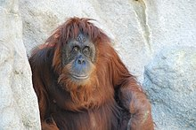

Monkey is a common name that may refer to most mammals of the infraorder Simiiformes, also known as simians. Traditionally, all animals in the group now known as simians are counted as monkeys except the apes. Thus monkeys, in that sense, constitute an incomplete paraphyletic grouping; however, in the broader sense based on cladistics, apes (Hominoidea) are also included, making the terms monkeys and simians synonyms in regard to their scope.
Miami Monkey

In 1933, aspiring animal behaviorist Joseph DuMond traveled to South Florida and released six Java Monkeys into a dense tropical forest. Unable to get the government funding that was needed to study these primates, DuMond came up with another idea: open the park to the public. Due to the Java Monkeys being territorial, and the newly introduced wandering guests, the monkeys frequently attacked guests. Not wanting to enclose the monkeys, DuMond came up with the most notable feature of Monkey Jungle: the caging of the guests.[3]
A 1994 archaeological dig led by archaeologist Robert S. Carr unearthed some important and interesting discoveries in naturally occurring sinkholes on Monkey Jungle's property. Fossils aged over 10,000 years old were found at the site, including those from the American Lion, Dire Wolf, Pleistocene horse, and camel. It is one of the largest of such findings anywhere in Florida.[4]
Experiences
Along with the ability to walk by and view each area of the park on jungle trails, Monkey Jungle also offers individual experiences and presentations personalized to each area/exhibit.
Wild Monkey Swimming Pool & Trail
Visiting this exhibit brings guests to the home of the Java Macaques, which are native to Southeast Asia. These monkeys are the soul of Monkey Jungle, being the first primates introduced to the park and accounting for the majority of the primates in the park. This 7-acre exhibit provides the guests the opportunity to see Java Macaques in an environment similar to one that the species thrives in, tropical Southeast Asia. Stick around long enough and guests may even have the opportunity to see them dive into the pond in search of snacks.[6]
Daily presentation times for this exhibit are: 10:00 am, 12:15 pm, 2:30 pm, and 4:30 pm.[6]
Amazonian Rainforest
The Amazonian Rainforest is a large exhibit that immerses guests into the world of the Amazon Rainforest and is North America's only semi-natural tropical rainforest. Frank DuMond, Joseph's son, spent over 5 years in the Amazon Rainforest, mostly in a 100-mile radius of Iquitos, Peru, collecting a wide range of plants to ensure that the area was as natural as possible. The monkeys here are free to live however they'd like, with no forced human contact. This provides the opportunity for guests to view the monkeys in a very natural way, allowing for some studies conducted here to receive international attention.[7] Three different species of monkeys call this exhibit a home, all of which have helped make an impact in the science community:
Squirrel Monkey
Squirrel Monkey - The second most plentiful species in the park, Monkey Jungle's Squirrel Monkeys number around 125, making them pretty easy to spot.[7]
Black-Capped Capuchin - Of the three different monkey species in the exhibit, the Black-Capped Capuchin can be easily recognized by guests by the raised black fur, or "cap" on the top of their heads.[7] Widely considered to be one of the smartest of all the monkey species, Black-Capped Capuchin's are often involved in programs to assist human quadriplegics.[citation needed]
_Photograph_By_Shantanu_Kuveskar.jpg)